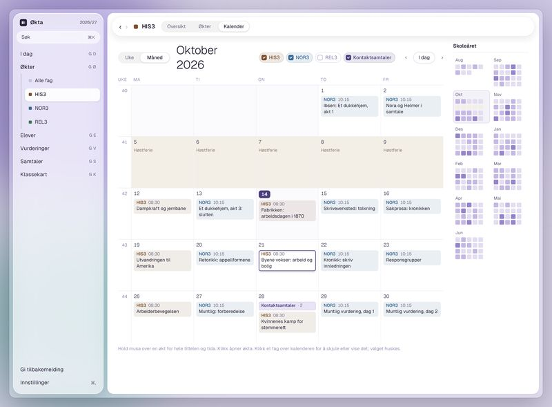
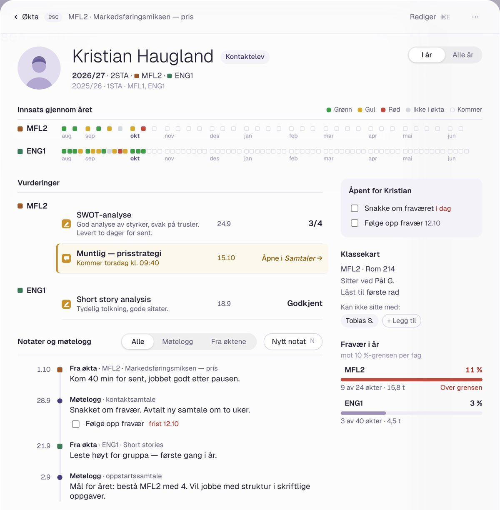
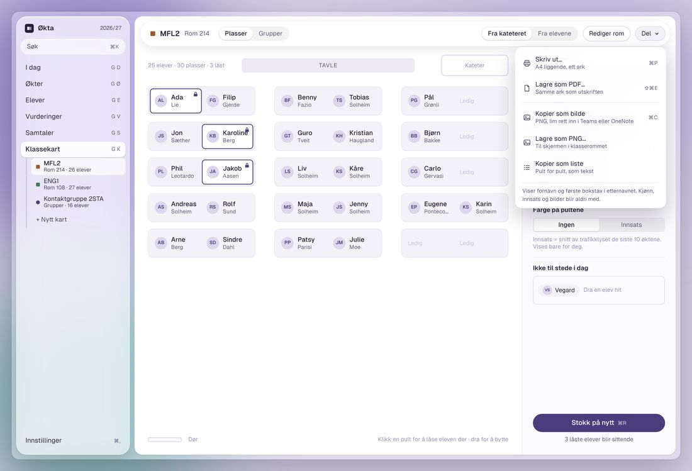
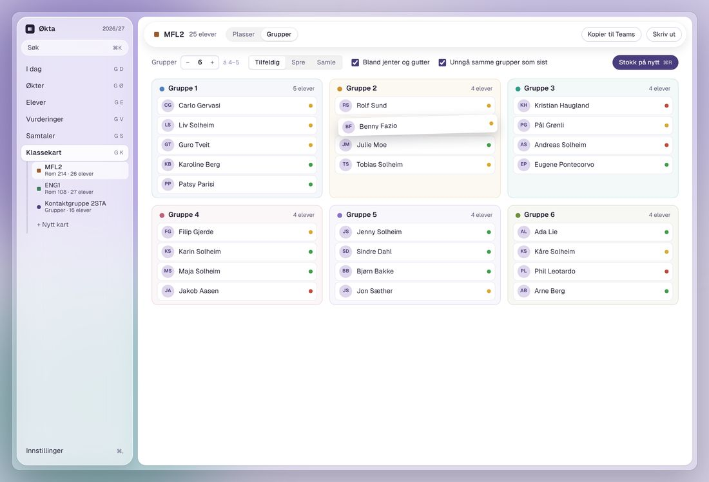
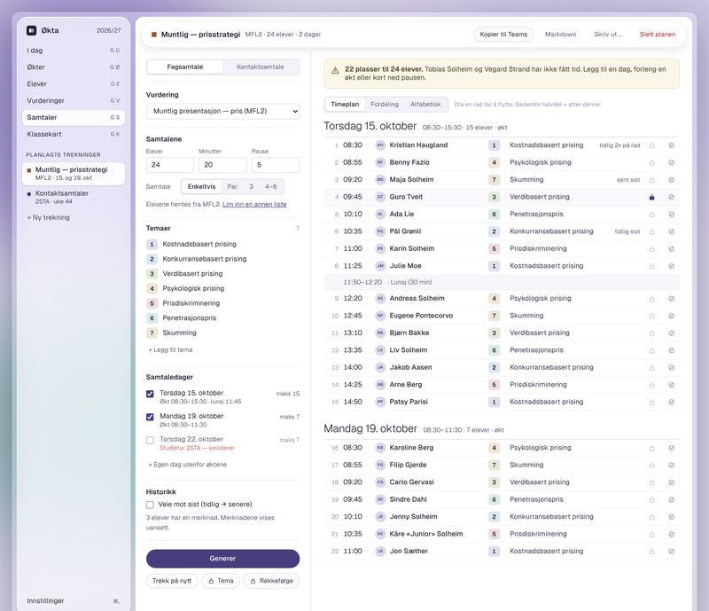

Kalenderstrøm
Agendaen for hver økt går rett inn i elevenes kalender. Du skriver den én gang, de ser den der de allerede ser.
Økta samler det du ellers har i regneark, notatbøker og hodet: planen for økta, skåring av elevene, logg, kontaktsamtaler og klassekart. Alt lagres lokalt, uten konto og uten sky.
Kildekoden er åpen · Ingen innlogging · Virker uten nett

Hva Økta gjør
Ikke enda et system du må fylle ut for andre. Et verktøy som sparer deg tid i økta, og gir deg oversikten når du trenger den.
Skåring
Rød, gul eller grønn for innsats, med tastene 1, 2 og 3. Den som ikke er der får 0. Planen for økta går ved siden av, så du ser hva som skjer nå og hvor mye tid som er igjen.


Oversikt og vurdering
Hver skåring havner i oversikten for faget: hele klassen, økt for økt, sortert etter snitt. Du ser med en gang hvem som går godt og hvem som glipper. Når midtveisvurderingen kommer, har du innsats over tid, fravær og logg for hver elev, i stedet for å lete i hukommelsen.
Elevkortet
Ett trykk på et navn åpner elevkortet. Der ligger innsatsen i alle fagene eleven har med deg, vurderingene med resultat, og loggen fra øktene og kontaktsamtalene. Klart til samtalen med eleven eller foresatte.

Planlegging
Dra aktivitetene i en tidslinje til planen går opp. Knytt økta til periode, vurdering og kompetansemål, og se timeregnskapet for faget ta form.
Klassekart og grupper
Tegn rommet én gang. Stokk elevene, lås dem som må sitte fast, og del opp i grupper med regler du bestemmer selv: bland jenter og gutter, hold to elever fra hverandre, juster nivå.



Agendaen for hver økt går rett inn i elevenes kalender. Du skriver den én gang, de ser den der de allerede ser.

Sett opp samtaledager, la appen fordele tidene, og skriv referat mens du snakker. Neste samtale starter med det dere sa sist.

Slipp PDF-en med klasselista fra skolens system inn i Økta. Navn, klasse og bilde legges inn for deg, og ingenting sendes noe sted.
Elever, økter og notater med ⌘K.
Korte notater fra økta havner på riktig elev.
Ting du må huske, knyttet til elev og fag.
Ser hvor langt du er kommet i faget.
Muntlig, skriftlig og samtaledager samlet.
Flytt innhold mellom datoer med ett drag.
Følger maskinen din.
Ukeplan, årsplan og klassekart på papir.
Personvern
Økta er bygget slik at du ikke trenger å stole på noen andre. Det finnes ingen server å stole på, og ingen konto som kan lekke. Alt du skriver, ligger i én fil på maskinen din.
Last ned
Last ned, åpne, importer klasselista. Første gang hjelper Økta deg med fagene og timeplanen.
Versjon 0.3.0 · macOS 13 eller nyere · Apple-chip og Intel
Første gang du åpner: Dra Økta til Programmer. Appen er ikke signert ennå, så første gang stopper macOS den: åpne Systeminnstillinger › Personvern og sikkerhet, og velg «Åpne likevel».
Versjon 0.3.0 · Windows 10 og 11, 64-bit
Første gang du åpner: Kjør installasjonen. Viser Windows en blå advarsel, velger du «Mer informasjon» og «Kjør likevel».
Spørsmål
Finner du ikke svaret? Bruk «Gi tilbakemelding» i appen.
Nei. Økta er gratis å bruke, og kildekoden er åpen.
I én databasefil på maskinen din. Ingenting lastes opp. Vil du ta sikkerhetskopi, kan du kopiere fila eller eksportere et oppsett.
Du er selv ansvarlig for hvordan du behandler opplysninger om elevene. Fordi alt ligger lokalt, er Økta enkel å vurdere: det finnes ingen databehandler utenfor maskinen din. Snakk gjerne med personvernombudet eller IKT-ansvarlig, og vis dem personvernsiden.
Ikke med automatisk synk ennå. Du kan flytte oppsettet mellom maskiner med eksportfila.
Alle. Du legger inn fagene dine selv, og kan hente kompetansemålene fra læreplanen med fagsøket.
En lærer som ville ha et bedre verktøy enn regnearket. Tilbakemeldinger fra andre lærere styrer hva som kommer.